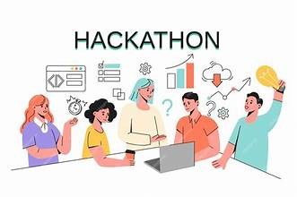

Program & Kegiatan
Kami menyediakan berbagai program yang dirancang untuk mendukung pengembangan keterampilan, berbagi pengetahuan, dan menciptakan peluang kolaborasi di bidang teknologi.
Program Utama
Meetups dan Diskusi Teknologi
Diskusi rutin tentang tren teknologi terbaru, pemrograman, machine learning, blockchain, dan lainnya. Ini adalah kesempatan Anda untuk berjejaring dengan pakar di bidangnya.
Frekuensi: Setiap bulan
Lokasi: Online dan offline (lokasi di beberapa kota besar)
Ikuti Diskusi TeknologiWorkshop Teknologi

Pelajari keterampilan praktis dalam bidang pemrograman, cloud computing, pengembangan aplikasi, dan banyak lagi. Dipandu oleh mentor-mentor berpengalaman di industri.
Frekuensi: Setiap dua bulan
Lokasi: Online dan offline
Daftar untuk WorkshopHackathon
Hackathon tahunan kami adalah kesempatan untuk menunjukkan keahlian Anda, berkolaborasi dalam tim, dan menciptakan solusi teknologi yang inovatif.
Frekuensi: Setahun sekali
Hadiah: Dukungan untuk proyek, bimbingan startup, dan kesempatan pitch di depan investor
Ikuti HackathonMentorship Program untuk Startup
Program mentorship bagi anggota yang ingin mendirikan atau mengembangkan startup teknologi. Didukung oleh para profesional dan investor di bidang teknologi.
Durasi: 6 bulan
Pendaftaran: Terbuka sepanjang tahun
Daftar untuk Mentorship